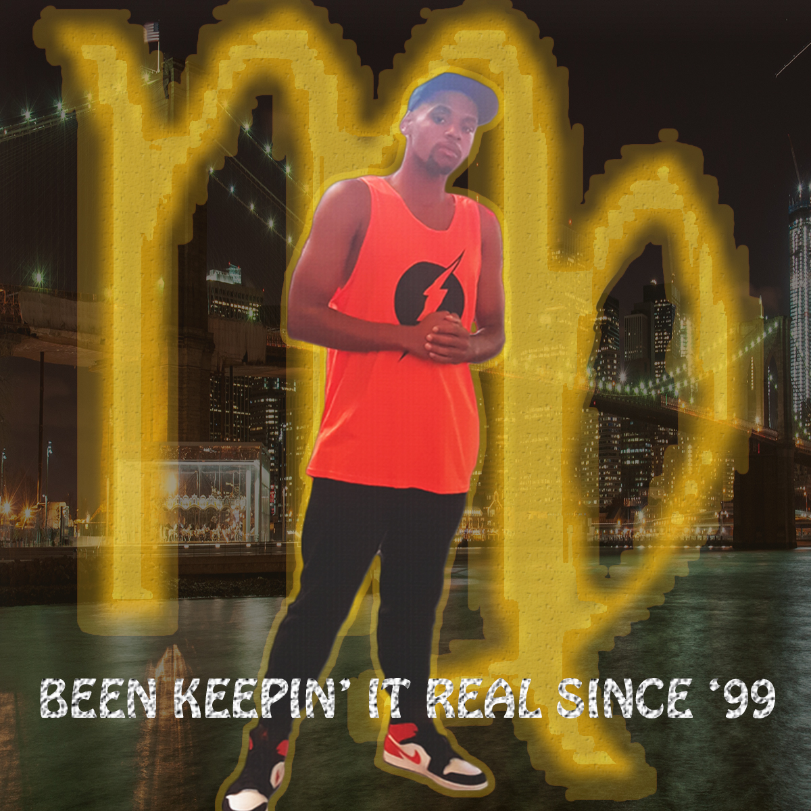

Multimedia Arts
I look forward to a great four years with all of you!
Coming from Brooklyn, New York, I wasn't really looked at as a spoiled child, but felt like I was living my greatest life until that all changed. For over a decade, personal issues caused me to have drawbacks from being happy and be sociable. At the age of 10, I always sang to myself and my mother would hear me, but I was shy to sing in front of her until my junior year of high school. I started singing in my first talent show, which landed myself in the top 5 school talents. A continuation of singing and doing music throughout my senior year eventually landed myself in the class of 2017 yearbook for "Best Male Singer".
Another interest that I visualize and foreshadow myself doing in the future is being a video editor. Prof. Ivanissevich's MMP 100 class really helps people like me to get a general understanding of what to expect if ever I start creating new pictures on Adobe, designing for different art covers, making animation videos, blending in sounds, etc.
Whenever I have a great amount of spare time to myself, I like to do various hobbies such as playing video games, read books, play sports, sing, write music, edit videos, work out, and cook. I love playing basketball, soccer and football when the weather is nice, I love doing cardio vascular and upper body workouts, and I especially love playing fighting games, zombie games, And open world games.
